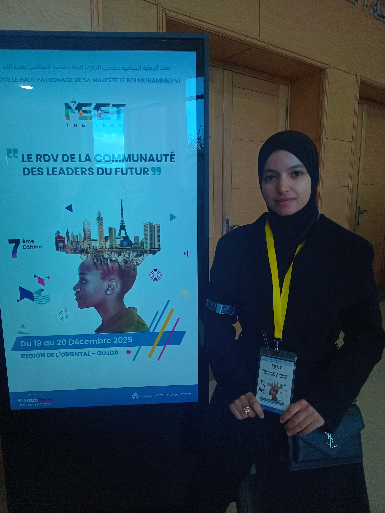

Je suis Hajar Lazar, étudiante en 3ème année de licence MI-Génie Informatique à la Faculté des Sciences - Université Mohammed Premier d'Oujda. S'appuyant sur une solide formation académique et une passion pour le développement web,je conçois des solutions logicielles modernes et efficaces.
